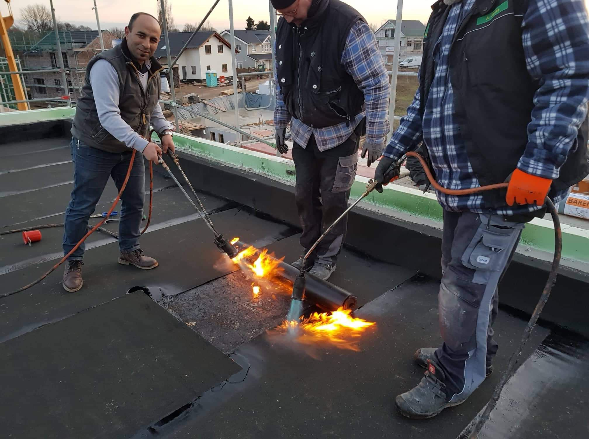
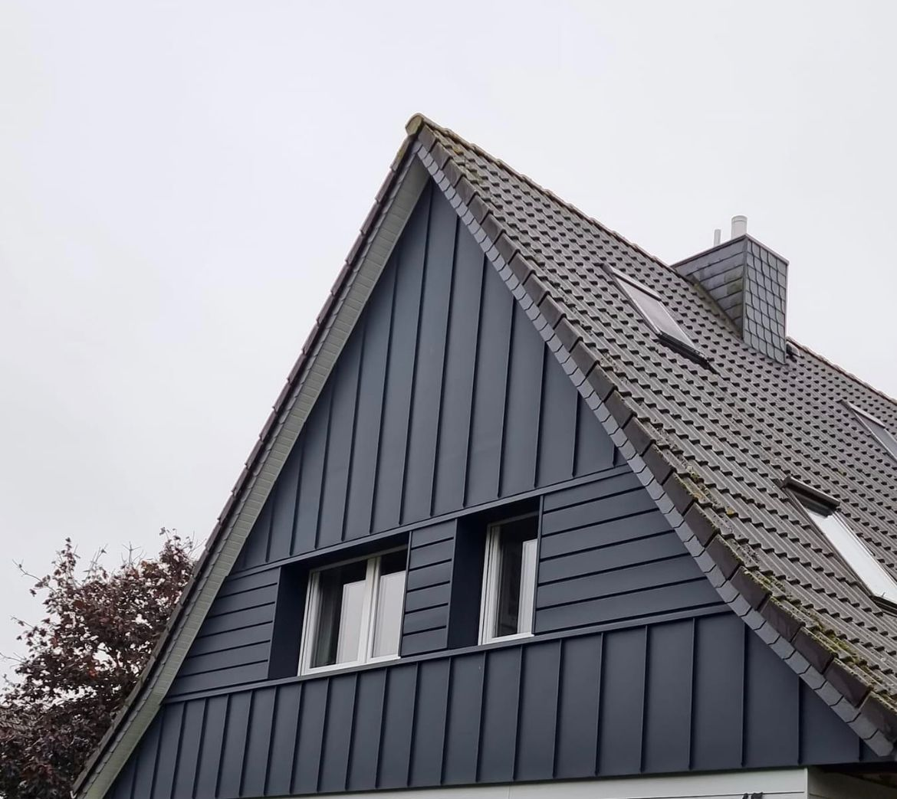
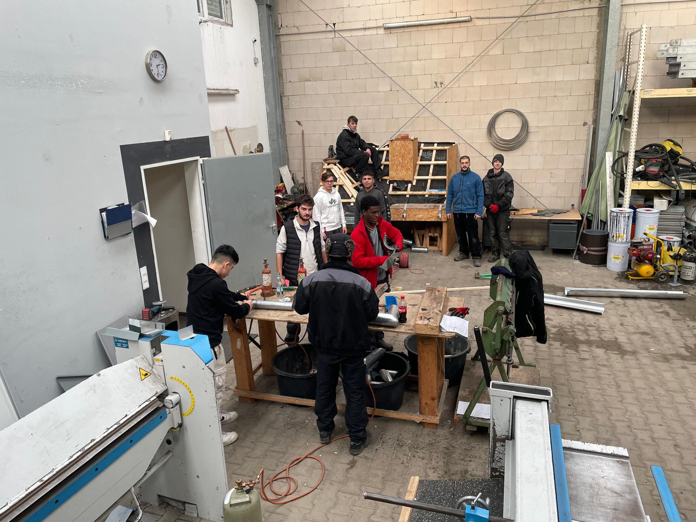
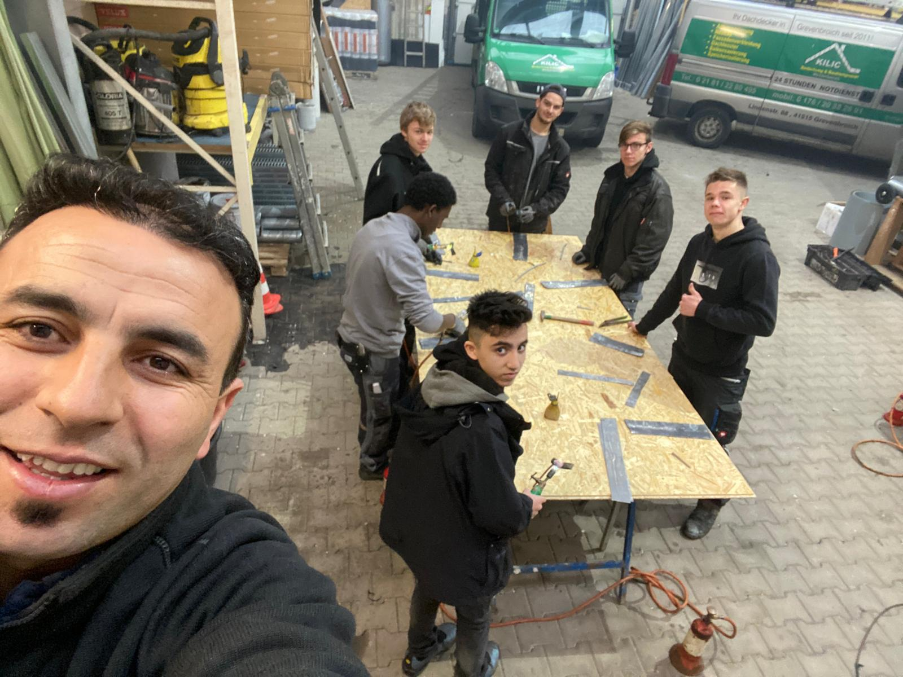
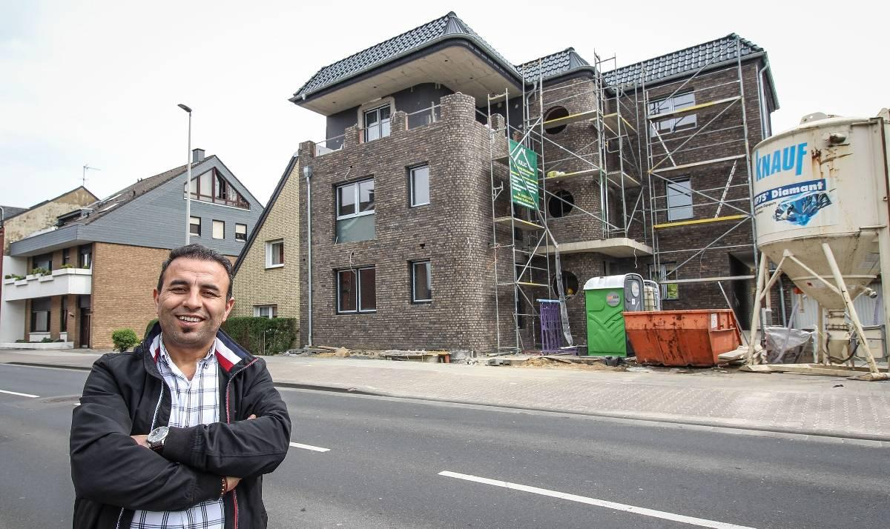
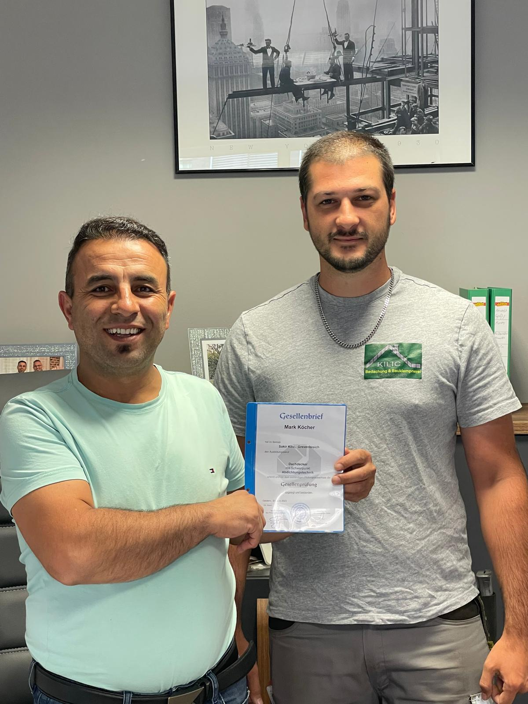

Meisterbetrieb seit 2011 · Grevenbroich · ganz NRW
Vom Steildach über die Fassade bis zur Flachdachabdichtung — Dachdeckerhandwerk mit Meisterqualität. Für Privatkunden, Hausverwaltungen und Bauunternehmen.
Rund ums Dach
Von der klassischen Dachdeckerarbeit bis zum Neubau — ein Fachunternehmen für alle Gewerke am und ums Dach.
Erhaltung und Modernisierung bestehender Gebäude für mehr Sicherheit und Effizienz.
Schutz und stilvolles Design für Ihre Fassade mit modernen Materialien.
Wartung, Abdichtung und Neugestaltung von Flachdächern für maximale Beständigkeit.
Installation und Wartung hochwertiger Dachfenster von Velux für mehr Licht und Komfort.
Fachgerechte Balkonsanierung für eine langlebige und ästhetische Nutzung.
Präzise Bauklempnerarbeiten für Dachentwässerung, Fassaden und mehr.

Über uns
Gegründet im August 2011 auf der Lindenstraße in Grevenbroich, entwickelte sich Kilic Bedachungen mit harter Arbeit und Engagement vom Ein-Mann-Betrieb zu einem etablierten Fachunternehmen — heute mit 22 Mitarbeitern, darunter erfahrene Dachdeckermeister, Spezialisten und Auszubildende.
Wir arbeiten mit Hausverwaltungen, großen Bauunternehmen und privaten Kunden in ganz Nordrhein-Westfalen zusammen. Qualität steht für uns an erster Stelle — deshalb setzen wir ausschließlich auf bewährte Lieferanten und Marken.
Sakir KilicGründer & Inhaber — und weiterhin mit auf dem Dach
Qualität an erster Stelle
Gebaut & gedeckt
Ein Blick auf Projekte, die wir mit Liebe zum Detail umgesetzt haben — von der Fassade bis zum Flachdach.





Wir bilden aus
Kilic Bedachungen ist ein anerkannter Ausbildungsbetrieb. Wir geben jungen Talenten die Möglichkeit, das Dachdeckerhandwerk von Grund auf zu erlernen — mit moderner Technik und erfahrenen Ausbildern.
Vom ersten Tag in der Werkstatt bis zum bestandenen Gesellenbrief: Wir bereiten unseren Nachwuchs optimal auf eine sichere Zukunft im Handwerk vor.
Ausbildung anfragenKein Formular auf der alten Seite? Jetzt schon.
Beschreiben Sie kurz Ihr Vorhaben — Sanierung, Fassade, Flachdach, Dachfenster oder ein Notfall. Wir melden uns mit Einschätzung und Termin.
Lieber direkt sprechen? 02181 2280495 · 0176 20382691
Kilic Bedachungen
Merkatorstraße 18 · Grevenbroich
Telefon: 02181 2280495
Mobil: 0176 20382691
E-Mail: info@kilic-dachtechnik.de
Gründer Sakir Kilic
Grevenbroich · ganz NRW
24-Stunden-Notdienst